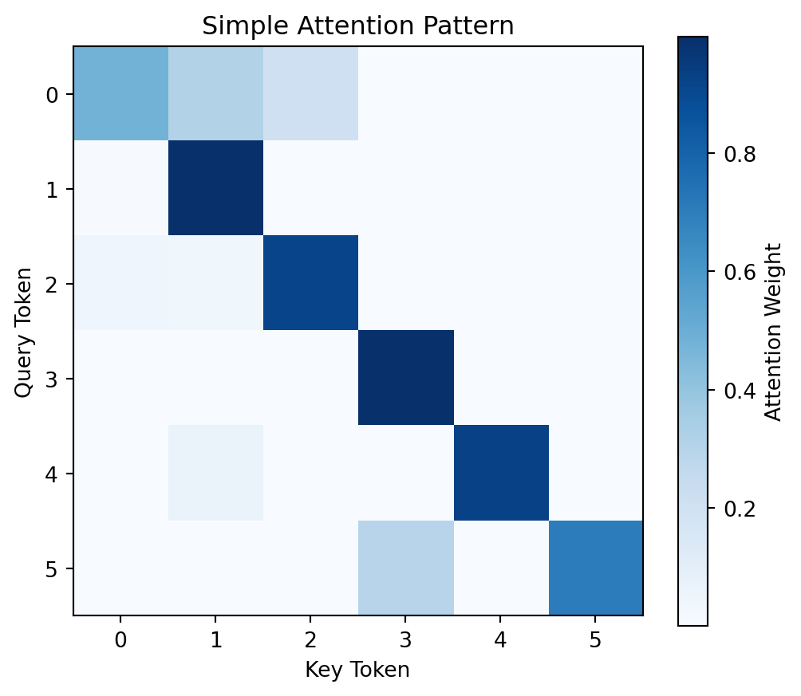

flowchart TB
subgraph scalar["0D: Scalar"]
s["5"]
end
subgraph vector["1D: Vector"]
v["[1, 2, 3, 4, 5]"]
end
subgraph matrix["2D: Matrix"]
m["[[1, 2, 3],<br/>[4, 5, 6]]"]
end
subgraph tensor3d["3D: Tensor"]
t["Stack of matrices<br/>(batch, seq, embed)"]
end
scalar --> vector --> matrix --> tensor3d
Module 01: Tensors
Introduction
The foundation of everything in deep learning. Before we can build a language model, we need to understand tensors - the data structure that holds all our numbers.
A tensor is a multi-dimensional array of numbers. If you’ve used NumPy arrays, you already know what tensors are - PyTorch tensors are nearly identical, but with GPU acceleration and automatic differentiation built in.
Why do we need them for LLMs?
- Text becomes numbers: Every word/token gets converted to a list of numbers (a vector)
- Batching: We process multiple sequences at once for efficiency
- Matrix operations: Attention, embeddings, and neural network layers are all matrix multiplications
What Makes PyTorch Tensors Special
Unlike NumPy arrays, PyTorch tensors provide:
- GPU acceleration: Seamlessly move computations to GPU for 10-100x speedup
- Automatic differentiation: Track operations to compute gradients (covered in Module 02)
- Optimized kernels: BLAS/cuBLAS backends for highly efficient linear algebra
Tensor Dimensions
Think of tensors by their dimensions:
The shape of a tensor tells you what it represents. In an LLM:
(vocab_size,)- A 1D tensor: scores for each word in vocabulary(seq_len, embed_dim)- A 2D tensor: one embedding vector per token(batch, seq_len, embed_dim)- A 3D tensor: multiple sequences at once
LLM Tensor Shapes
flowchart LR
subgraph tokens["Token IDs"]
tid["(batch, seq_len)<br/>[[101, 2054, 2003],<br/>[101, 7592, 102]]"]
end
subgraph embeds["Embeddings"]
emb["(batch, seq, embed_dim)<br/>Each token → 64-dim vector"]
end
subgraph attn["Attention"]
att["(batch, heads, seq, seq)<br/>Each head: seq×seq matrix"]
end
tokens --> embeds --> attn
The Math
Element-wise Operations
Apply the same operation to every element:
[1, 2, 3] + [4, 5, 6] = [5, 7, 9]
[1, 2, 3] * 2 = [2, 4, 6]Matrix Multiplication
The core operation of neural networks. For matrices A (m×n) and B (n×p):
C = A @ B → C is (m×p)
C[i,j] = sum(A[i,k] * B[k,j] for k in range(n))Broadcasting
When shapes don’t match, PyTorch automatically expands smaller tensors:
flowchart LR
subgraph input["Batch (2,4,3)"]
batch["[[a,b,c], ...]"]
end
subgraph bias["Bias (3,)"]
b["[x, y, z]"]
end
subgraph result["Result (2,4,3)"]
res["[[a+x,b+y,c+z], ...]"]
end
input --> |"+"| result
bias --> |"broadcasts"| result
Broadcasting rules:
- Align shapes from the right
- Dimensions must match OR be 1 (or missing)
- Size-1 dimensions get repeated to match
Code Walkthrough
Let’s explore tensors interactively:
import torch
print(f"PyTorch version: {torch.__version__}")
device = "mps" if torch.backends.mps.is_available() else "cpu"
print(f"Device: {device}")PyTorch version: 2.9.1
Device: mpsCreating Tensors
# From a list
x = torch.tensor([[1.0, 2.0, 3.0], [4.0, 5.0, 6.0]])
print(f"Shape: {x.shape}")
print(f"Dtype: {x.dtype}")
print(f"Device: {x.device}")
print(x)Shape: torch.Size([2, 3])
Dtype: torch.float32
Device: cpu
tensor([[1., 2., 3.],
[4., 5., 6.]])# Random tensors (common for initialization)
random_tensor = torch.randn(2, 3, 4) # Normal distribution (mean=0, std=1)
print(f"Random tensor shape: {random_tensor.shape}")
print(f"Mean: {random_tensor.mean():.4f}, Std: {random_tensor.std():.4f}")Random tensor shape: torch.Size([2, 3, 4])
Mean: -0.1683, Std: 1.0972Data Types (dtypes)
Choosing the right dtype affects memory usage and numerical precision:
# Default is float32 (32 bits = 4 bytes per number)
t32 = torch.randn(1000, 1000)
print(f"float32: {t32.element_size()} bytes per element, total: {t32.numel() * t32.element_size() / 1e6:.1f} MB")
# float16 uses half the memory but lower precision
t16 = torch.randn(1000, 1000, dtype=torch.float16)
print(f"float16: {t16.element_size()} bytes per element, total: {t16.numel() * t16.element_size() / 1e6:.1f} MB")
# bfloat16 is popular for training (better range than float16)
tbf16 = torch.randn(1000, 1000, dtype=torch.bfloat16)
print(f"bfloat16: {tbf16.element_size()} bytes per element")float32: 4 bytes per element, total: 4.0 MB
float16: 2 bytes per element, total: 2.0 MB
bfloat16: 2 bytes per elementWhen to use each:
- float32: Default, good for learning and debugging
- float16: Inference on GPUs with Tensor Cores, half memory
- bfloat16: Training large models, better numerical stability than float16
Reshaping
Reshaping is critical for multi-head attention, where we split the embedding dimension across multiple heads:
# Reshape for multi-head attention
batch, seq, embed = 4, 32, 64
num_heads = 8
head_dim = embed // num_heads
x = torch.randn(batch, seq, embed)
print(f"Original: {x.shape}")
# Split into heads
x_heads = x.view(batch, seq, num_heads, head_dim)
print(f"After view: {x_heads.shape}")
# Transpose for attention computation
x_heads = x_heads.transpose(1, 2) # (batch, heads, seq, head_dim)
print(f"After transpose: {x_heads.shape}")Original: torch.Size([4, 32, 64])
After view: torch.Size([4, 32, 8, 8])
After transpose: torch.Size([4, 8, 32, 8])Memory Layout: view vs reshape vs contiguous
Understanding memory layout helps avoid subtle bugs:
# view() requires contiguous memory - it's a zero-copy operation
x = torch.randn(3, 4)
print(f"Original is contiguous: {x.is_contiguous()}")
# Transpose creates a non-contiguous view (same memory, different strides)
x_t = x.transpose(0, 1)
print(f"Transposed is contiguous: {x_t.is_contiguous()}")
# view() fails on non-contiguous tensors
try:
x_t.view(12) # This will fail
except RuntimeError as e:
print(f"Error: {e}")
# contiguous() makes a copy with proper memory layout
x_t_contig = x_t.contiguous()
print(f"After contiguous(): {x_t_contig.is_contiguous()}")
x_t_contig.view(12) # Now it works
print("view() works after contiguous()")
# reshape() handles this automatically (but may copy)
reshaped = x_t.reshape(12) # Always works
print(f"reshape() auto-handles non-contiguous: {reshaped.shape}")Original is contiguous: True
Transposed is contiguous: False
Error: view size is not compatible with input tensor's size and stride (at least one dimension spans across two contiguous subspaces). Use .reshape(...) instead.
After contiguous(): True
view() works after contiguous()
reshape() auto-handles non-contiguous: torch.Size([12])Rule of thumb: Use reshape() unless you specifically need zero-copy behavior.
Matrix Multiplication
Matrix multiplication is the workhorse of neural networks. The @ operator (or torch.matmul) handles batched operations automatically:
# Simulating Q @ K^T in attention
Q = torch.randn(2, 8, 32, 8) # (batch, heads, seq, head_dim)
K = torch.randn(2, 8, 32, 8)
# Attention scores
scores = Q @ K.transpose(-2, -1) # (batch, heads, seq, seq)
print(f"Q shape: {Q.shape}")
print(f"K^T shape: {K.transpose(-2, -1).shape}")
print(f"Scores shape: {scores.shape}")Q shape: torch.Size([2, 8, 32, 8])
K^T shape: torch.Size([2, 8, 8, 32])
Scores shape: torch.Size([2, 8, 32, 32])Key insight: The last two dimensions follow standard matrix multiplication rules (m, k) @ (k, n) -> (m, n), while leading dimensions are broadcasted/batched.
Softmax: Converting Scores to Probabilities
Softmax takes a vector of arbitrary real numbers (logits) and converts them into a probability distribution — values between 0 and 1 that sum to 1.
\[\text{softmax}(z_i) = \frac{e^{z_i}}{\sum_{j=1}^{n} e^{z_j}}\]
The exponential function amplifies differences — larger values get disproportionately larger weights:
import torch
logits = torch.tensor([2.0, 1.0, 0.1])
probs = torch.softmax(logits, dim=-1)
print(f"Logits: {logits.tolist()}")
print(f"Probs: {[f'{p:.3f}' for p in probs.tolist()]}")
print(f"Sum: {probs.sum():.3f}")Logits: [2.0, 1.0, 0.10000000149011612]
Probs: ['0.659', '0.242', '0.099']
Sum: 1.000The highest logit (2.0) gets ~65% of the probability mass. This is how attention weights and next-token predictions work.
The dim parameter matters — it specifies which dimension sums to 1:
# Batch of scores: (batch=2, seq=3)
scores = torch.randn(2, 3)
weights = torch.softmax(scores, dim=-1) # Each row sums to 1
print(f"Row sums: {weights.sum(dim=-1)}") # [1.0, 1.0]Row sums: tensor([1.0000, 1.0000])Tip: Always use torch.softmax() — it handles numerical stability automatically. For details on temperature scaling, see Module 08: Generation. For softmax in attention, see Module 05: Attention.
Common Operations in LLMs
These operations appear everywhere in transformer models:
# Layer Normalization (normalizes features, not batch)
x = torch.randn(4, 32, 64) # (batch, seq, embed)
mean = x.mean(dim=-1, keepdim=True)
std = x.std(dim=-1, keepdim=True)
x_norm = (x - mean) / (std + 1e-5)
print(f"LayerNorm output shape: {x_norm.shape}")
print(f"Mean per token: {x_norm.mean(dim=-1)[0, :3]}") # Should be ~0
# Linear projection (the most common operation)
W = torch.randn(64, 256) # (in_features, out_features)
b = torch.randn(256) # (out_features,)
x = torch.randn(4, 32, 64) # (batch, seq, in_features)
out = x @ W + b # Broadcasting adds bias
print(f"Linear output shape: {out.shape}")LayerNorm output shape: torch.Size([4, 32, 64])
Mean per token: tensor([-5.5879e-09, 2.4214e-08, -1.4901e-08])
Linear output shape: torch.Size([4, 32, 256])Broadcasting in Action
# Adding bias to all tokens in a batch
embeddings = torch.randn(4, 32, 64) # (batch, seq, embed)
bias = torch.randn(64) # (embed,)
result = embeddings + bias # Broadcasts!
print(f"Embeddings: {embeddings.shape}")
print(f"Bias: {bias.shape}")
print(f"Result: {result.shape}")Embeddings: torch.Size([4, 32, 64])
Bias: torch.Size([64])
Result: torch.Size([4, 32, 64])Device Management (CPU vs GPU)
Moving tensors between devices is essential for GPU acceleration:
# Check available devices
print(f"MPS available: {torch.backends.mps.is_available()}")
print(f"CUDA available: {torch.cuda.is_available()}")
# Create tensor on specific device
device = "mps" if torch.backends.mps.is_available() else "cpu"
x = torch.randn(1000, 1000, device=device)
print(f"Tensor device: {x.device}")
# Move existing tensor to device
y = torch.randn(1000, 1000) # Created on CPU by default
y = y.to(device) # Move to GPU
print(f"After .to(): {y.device}")MPS available: True
CUDA available: False
Tensor device: mps:0
After .to(): mps:0Common pitfall: Operations require tensors on the same device:
# This would fail if devices differ:
# z = x_cpu + x_gpu # RuntimeError!
# Always ensure tensors are on the same device
a = torch.randn(100, device=device)
b = torch.randn(100, device=device)
c = a + b # Works!
print(f"Both on {device}: operation succeeded")Both on mps: operation succeededExercises
Exercise 1: Create an Embedding Lookup
# Create a vocabulary embedding table
vocab_size = 100
embed_dim = 32
embedding_table = torch.randn(vocab_size, embed_dim)
print(f"Embedding table: {embedding_table.shape}")
# Look up embeddings for token IDs
token_ids = torch.tensor([5, 23, 7, 42])
embeddings = embedding_table[token_ids]
print(f"Token IDs: {token_ids}")
print(f"Embeddings shape: {embeddings.shape}")Embedding table: torch.Size([100, 32])
Token IDs: tensor([ 5, 23, 7, 42])
Embeddings shape: torch.Size([4, 32])Exercise 2: Simulate Simple Attention
import matplotlib.pyplot as plt
seq_len = 6
embed_dim = 8
# Token embeddings
tokens = torch.randn(seq_len, embed_dim)
# Compute attention scores (dot product similarity)
scores = tokens @ tokens.T
print(f"Attention scores shape: {scores.shape}")
# Apply softmax to get weights
attention_weights = torch.softmax(scores, dim=-1)
# Visualize
plt.figure(figsize=(6, 5))
plt.imshow(attention_weights.detach().numpy(), cmap='Blues')
plt.colorbar(label='Attention Weight')
plt.title('Simple Attention Pattern')
plt.xlabel('Key Token')
plt.ylabel('Query Token')
plt.show()Attention scores shape: torch.Size([6, 6])
Exercise 3: Apply Attention
# Weighted combination of values
output = attention_weights @ tokens
print(f"Input: {tokens.shape}")
print(f"Weights: {attention_weights.shape}")
print(f"Output: {output.shape}")
print("\nEach output token is a weighted average of ALL input tokens!")Input: torch.Size([6, 8])
Weights: torch.Size([6, 6])
Output: torch.Size([6, 8])
Each output token is a weighted average of ALL input tokens!Common Pitfalls
Before moving on, be aware of these common mistakes:
- Shape mismatches: Always print shapes when debugging. Most errors come from unexpected dimensions.
- Device mismatches: Tensors must be on the same device for operations. Use
.to(device)consistently. - In-place operations: Methods ending in
_(likeadd_()) modify tensors in-place, which can break gradient computation. - Forgetting contiguous(): After transpose/permute, call
.contiguous()before.view(). - dtype mismatches: Operations between float32 and float16 may silently upcast or fail.
Summary
Key takeaways:
- Tensors are multi-dimensional arrays - their shape tells you what they represent
- Broadcasting automatically expands smaller tensors to match larger ones
- Matrix multiplication is the core operation - inner dimensions must match
- Reshaping reorganizes dimensions without changing total elements
- Memory layout matters - understand contiguous vs strided for efficient operations
- Device placement - use GPU (MPS/CUDA) for 10-100x speedup on large tensors
- Data types - float32 for learning, float16/bfloat16 for production
What’s Next
In Module 02: Autograd, we’ll see how PyTorch automatically computes gradients through all these operations - the magic that makes neural networks trainable.